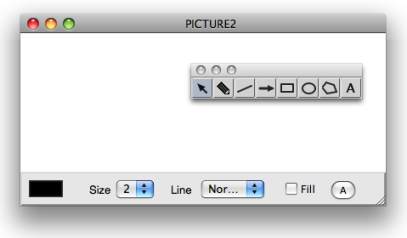
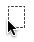
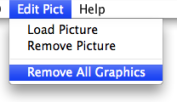
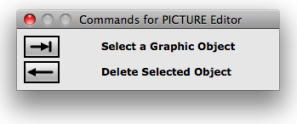

OpenMusic DocumentationHiérarchie de section : OM 6.6 User Manual > Basic Tools > Picture > Picture Editor
OpenMusic DocumentationHiérarchie de section : OM 6.6 User Manual > Basic Tools > Picture > Picture Editor
Navigation : page précédente | page suivante
Attention, votre navigateur ne supporte pas le javascript ou celui-ci à été désactivé. Certaines fonctionnalités de ce guide sont restreintes.
Picture Editor
The picture editor allows to edit the contents of the picture object and to add figures or sketches.
Background Picture
Load / Remove
To load or remove a background picture in the object editor, go to |

|
Editing Graphics : Tools and Options
The picture editor opens, along with a drawing palette .

Adding Graphics : Palette
The palette provides a seven drawing tools, in addition to the standard selection cursor  :
:
|
"text" tool |
Click and draw in the editor to create – additional – graphics in the picture editor.

Text Tool and Polygon Tool
| Text Tool | Polygon Tool | ||||
|---|---|---|---|---|---|
| 1. |  | Click somewhere in the editor then type some text. | 1. | Click in the editor to add points. | |
| 2. | Click again to validate. | 2. | Double click to validate and close the polygon. |
Editor Options
The lower part of the editor provides drawing options :

-  : click on the coloured patch and choose a colour in the Colour Chooser.
-
Sizepop up menu : select a number of pixel for lines thickness. -
Linepop up menu : plain or dashed line style. -
Filled: check the option to fill figures automatically. -
Abutton : font dialog window.
Editing Graphics : Commands and Menus
Selection / Remove
- To select a foreground item and to switch from an item to the other within the editor, press the
TABkey. The name of this item is visible in the upper right corner of the editor's window. - To remove a selected item, use the
Backspacekey.

To remove all the graphics from the editor, select |

|
Move

|
To move a selected item in the picture, drag and drop it with the pointer. |
Reminder
Remember that the |

|
Références :
Plan :
- OpenMusic Documentation
- OM 6.6 User Manual
- Introduction
- System Configuration and Installation
- Going Through an OM Session
- The OM Environment
- Visual Programming I
- Visual Programming II
- Basic Tools
- Curves and Functions
- Array
- TextFile
- Picture
- Picture Box
- Picture Editor
- Score Objects
- Maquettes
- Sheet
- MIDI
- Audio
- SDIF
- Lisp Programming
- Errors and Problems
- OpenMusic QuickStart
Navigation : page précédente | page suivante
A propos...(c) Ircam - Centre Pompidou